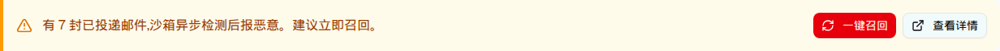

| 触发路径 | 层级0 → 异步检出数 > 0 时常驻显示（sandbox_result='malicious' AND initial_action='deliver'） |

| 元素 | PRD | demo 实测 |
|---|---|---|
| 告警条 | bg-amber-50 + border-amber-500，count>0 时显示 | 一致（左边框 4px amber-500） |
| 一键召回 | 确认框 → 批量召回 → 成功/失败提示 + 重试 | 点击无任何反应（无确认框、无请求） |
| 查看详情 | 跳漏网邮件详情列表 | 无跳转 |
| 召回响应时间 | < 3s（PRD §7） | — |
落地建议：召回复用邮件处置的 POST /api/v1/mail-logs/recall（已存在，支持批量 + 改判），不需要新开 API —— 符合 implement.md 第 4/6 条。
| 比对项 | demo 实际 DOM | 提取的 HTML | 是否一致 |
|---|---|---|---|
| 根节点 | div.bg-amber-50.border-l-4.border-amber-500 | 同 | 一致 |
| 后代节点数 | 18 | 18 | 一致 |
| 按钮 | 一键召回 / 查看详情 | 2 个 | 一致 |
| 确认弹窗 | 不存在 | 不包含 | 一致（PRD 要求但未实现） |